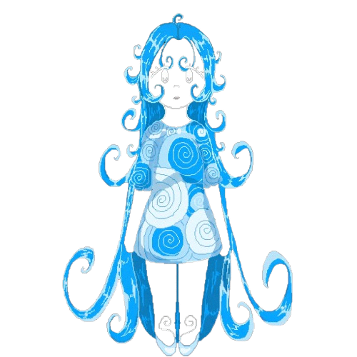
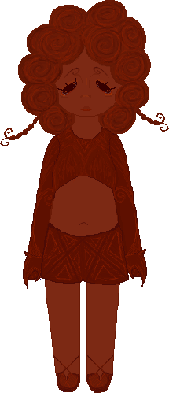
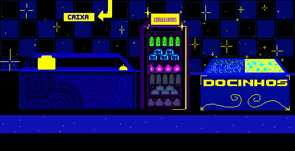
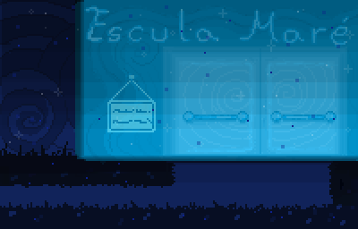
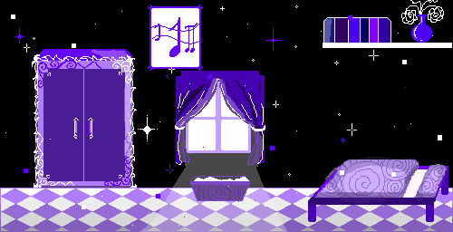
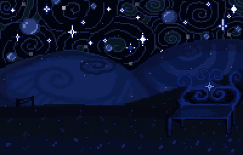

Protagonista
Lília
Uma água-viva humanoide que vive no fundo do mar. Depois de perder Helena, revisita os lugares que as duas conheciam e tenta entender o que aconteceu.
O mar guarda o que a gente tenta esquecer.
Um terror psicológico pixel art sobre Lília, Helena e uma lembrança que muda de forma cada vez que volta.
Instalador .exe 17,5 MB
A história
Lília vive no fundo do mar. Depois da morte de Helena, sua amiga, ela tenta entender o que aconteceu e o que poderia ter feito diferente. As lembranças surgem em lugares conhecidos, mas logo deixam de parecer confiáveis.
Lília e Helena conversam num lugar tranquilo. Quando Helena se afasta, a cena perde a cor e o sonho desaba.
O caminho passa por espaços cotidianos. Objetos e detalhes abrem frestas para o que Lília ainda não conseguiu encarar.
Olhos nas paredes, ruídos e lembranças distorcidas conduzem Lília até o confronto com a própria culpa.
As escolhas feitas ao longo do percurso levam a desfechos diferentes. Seguir em frente não apaga o que aconteceu.

Protagonista
Uma água-viva humanoide que vive no fundo do mar. Depois de perder Helena, revisita os lugares que as duas conheciam e tenta entender o que aconteceu.

Amiga de Lília
Helena aparece nos sonhos e nas lembranças de Lília. Em uma dessas cenas, as duas conversam num banco. Quando Helena se afasta, o sonho começa a perder a cor.
Galeria de cenários
Lília atravessa o mercado, a escola e a casa. A cada parada, uma parte do que ela lembra de Helena volta à superfície.

Entre as prateleiras, as lembranças ainda parecem comuns.

As recordações de Helena ficam mais presentes.

No quarto, Lília começa a encarar o dia da perda.
Caderno de produção
O banco onde Lília e Helena conversam apareceu primeiro no papel. Mova o controle para ver a passagem do storyboard à arte em pixel.
 StoryboardPixel art
StoryboardPixel art
Role para o lado e selecione uma página para ampliar.
Download
Baixe o instalador de Reminiscentia. Depois do download, abra o arquivo no Windows e siga as instruções de instalação.
Reminiscentia.exe 17,5 MB
